Proyecto Escolar
Fray Luca Paccioli
Fray Luca Paccioli

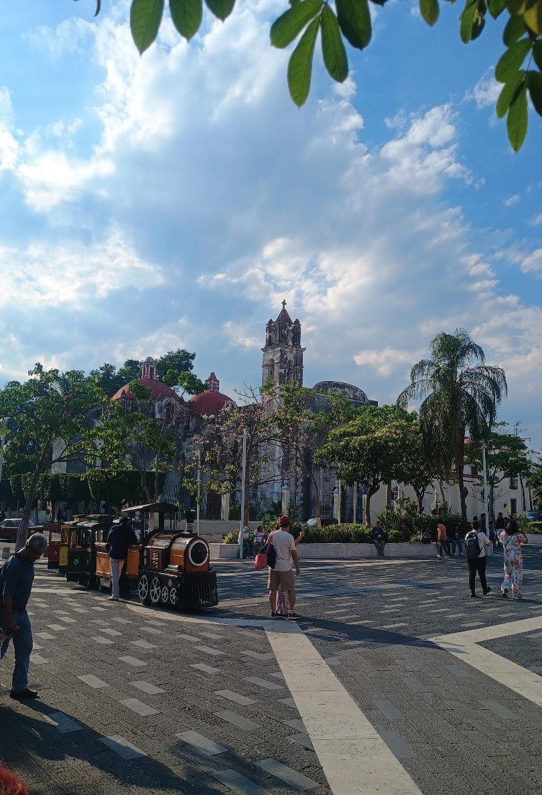
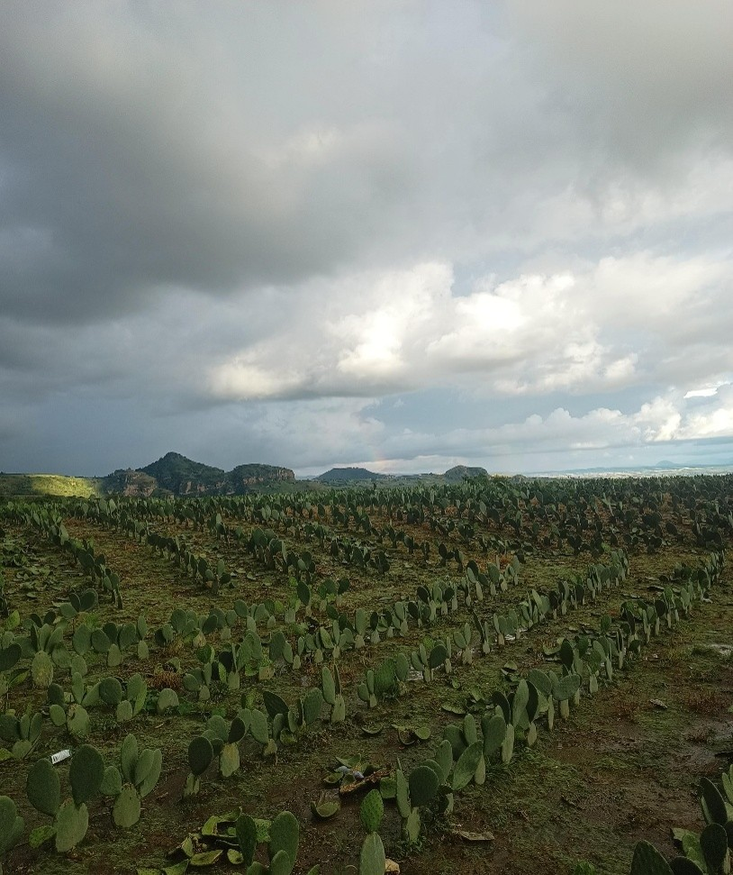
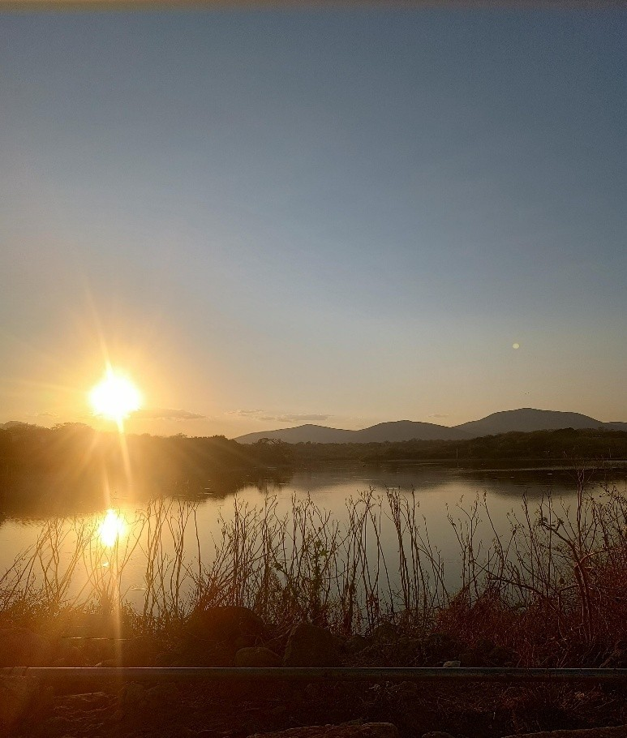
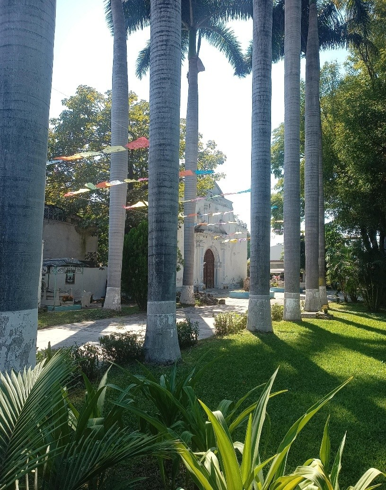
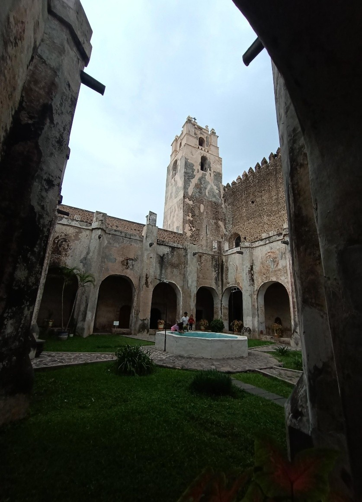
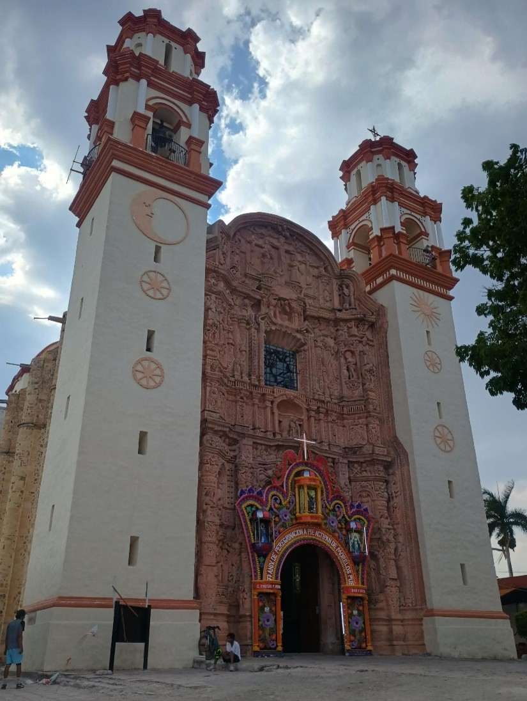
Desarrollo de páginas web, bases de datos y aplicaciones que permiten gestionar información de forma eficiente. En este proyecto, los alumnos de Informática diseñaron la estructura digital, la interfaz de usuario y la lógica de navegación para mostrar las 7 regiones de Morelos.
Los estudiantes de Diseño Gráfico se encargaron de la identidad visual del proyecto, creando el logotipo, la paleta de colores y las ilustraciones de cada región. Además, desarrollaron material promocional como infografías y carteles digitales para exponer la riqueza cultural de las 7 regiones de Morelos.
El equipo de Turismo investigó los atractivos naturales y culturales de las 7 regiones. Desde los balnearios de Amacuzac, la laguna de Coatetelco, hasta el ex convento de Tetecala. Crearon una guía turística interactiva para promover el ecoturismo y la economía local de estos municipios morelenses.
Estas son las 7 regiones que los alumnos de 6° Semestre trabajaron en su proyecto final.
Cada región representa la riqueza cultural, económica y turística del estado de Morelos.
Esta región recibe su nombre por estar integrada por los municipios del área metropolitana de la ciudad capital del estado de Morelos. Es reconocida por sus haciendas, su paisaje urbano entre barrancas y valles que combina audazmente el pasado colonial con el presente moderno. Sus variados viveros son un eje central en la economía e identidad regional.
📍 Zona metropolitana de MorelosUna región llena de historia y balnearios por igual. Desde los manantiales de Oaxtepec hasta los campos de riego de Ayala, el agua fluye calmada. Fue escenario de los grandes movimientos sociales del país; independencia y revolución se viven y sienten en cada rincón.
📍 Zora oriente de Morelos"Los Altos" tienen bien merecido su nombre, pues al ubicarse en los montes y laderas de la sierra de Chichihuatzin, su altitud media permite ver los valles centrales desde arriba. Los nopales y magueyes adornan el paisaje. En Huitzilac se disfruta de barbacoa entre un bosque frío que hace arder el corazón.
📍 Zona norte de MorelosLos lagos dan nombre a la región que recibe a quien visita con frescas frutas tropicales, pueblos pintorescos y alegres festividades. Desde "El Rodeo" hasta los paisajes de Amacuzac, el paisaje llano se acompaña de espejos de agua que para la población local representan más que su hogar: es trabajo, musa y sello de identidad.
📍 Zona sur de MorelosSi alguna vez camino a Tequesquitengo o a Las Estacas no has visto por lo menos 10 km seguidos de cañaverales, es porque es temporada de zafra y esa caña está procesándose en el ingenio de Zacatepec. Es una de las regiones siempre verdes: si no es caña, es arroz o maíz. Productos que en un tianguis de Xoxocotla encontrarás.
📍 Zona surponiente de MorelosCada mañana, el Popocatépetl da los buenos días a los conventos bajo sus pies. Tan pronto como sale el sol, también salen los campesinos a los campos de amaranto y las huertas de aguacate que acompañarán un plato de cecina de Yecapixtla. Para el frío, un gabán de Hueyapan o un jarro de café de altura.
📍 Zona nororiente de MorelosEs la más enigmática región. Costumbres arraigadas, fe, identidad y tradición de grupos mixtecos que habitan los valles de Axochiapan y Tepalcingo. En la fiesta del Señor de Tepalcingo se lucen tecuanes y músicos con intensos sones. En Jantetelco dejaron un centro ceremonial que desde el mirador de Jonacatepec podrás admirar.
📍 Zona suroriente de Morelos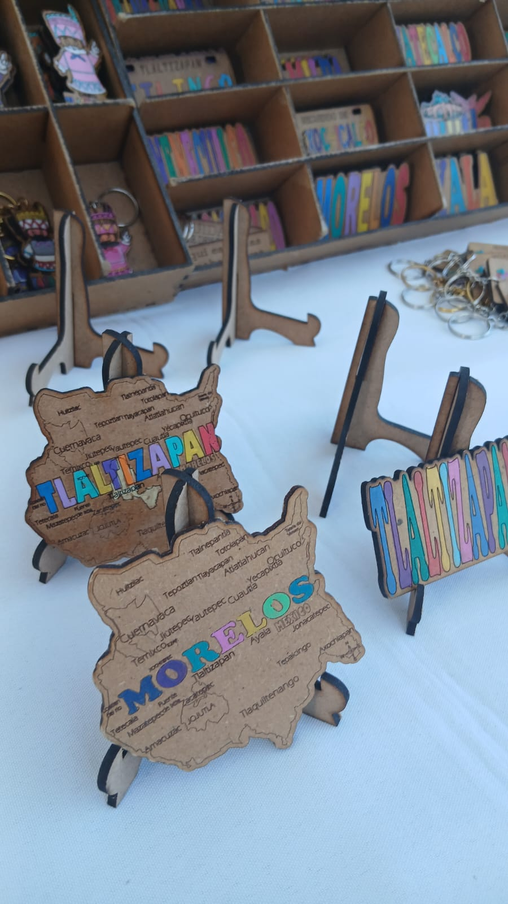
Artesanías de Madera - Tlaltizapán

Mezcal de Palpan - Miacatlán
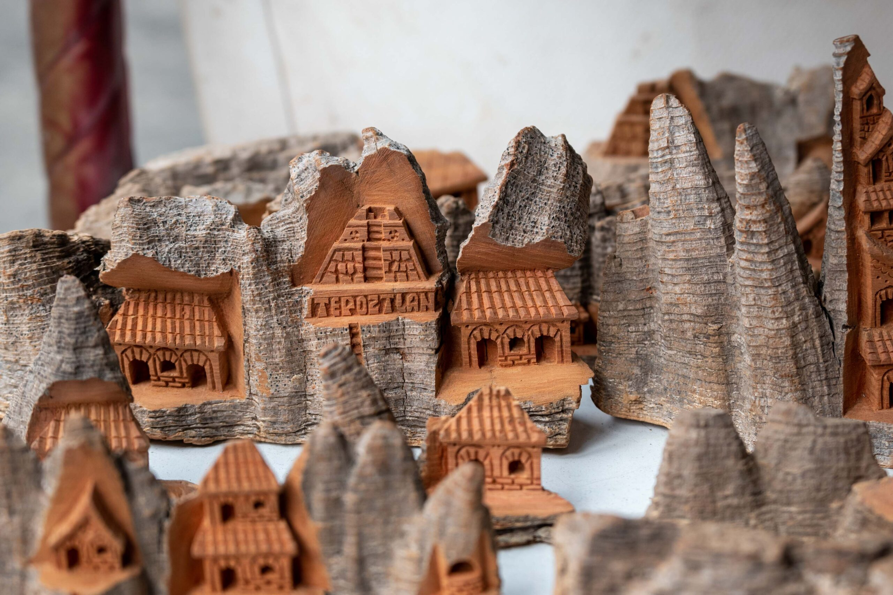
Tallado de Pochote y Cerámica - Tepoztlán
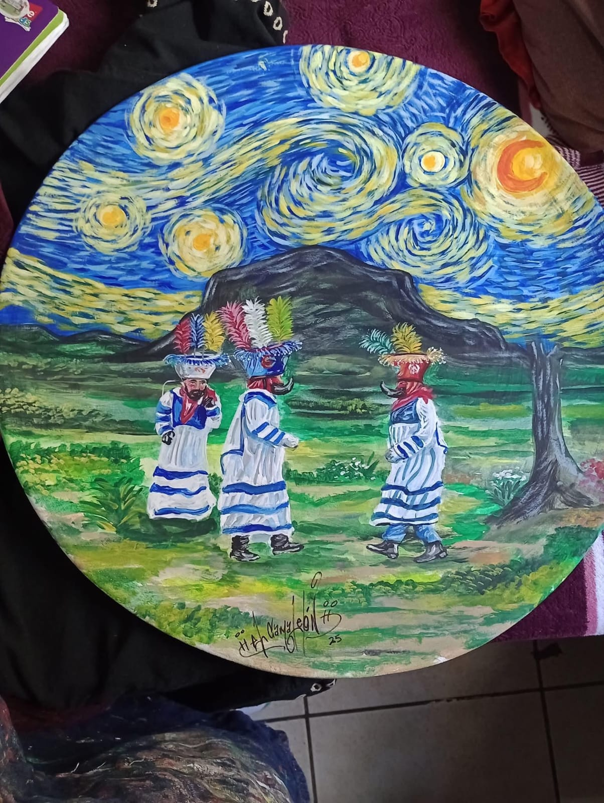
Pintura Óleo y Acrílico - Jantetelco
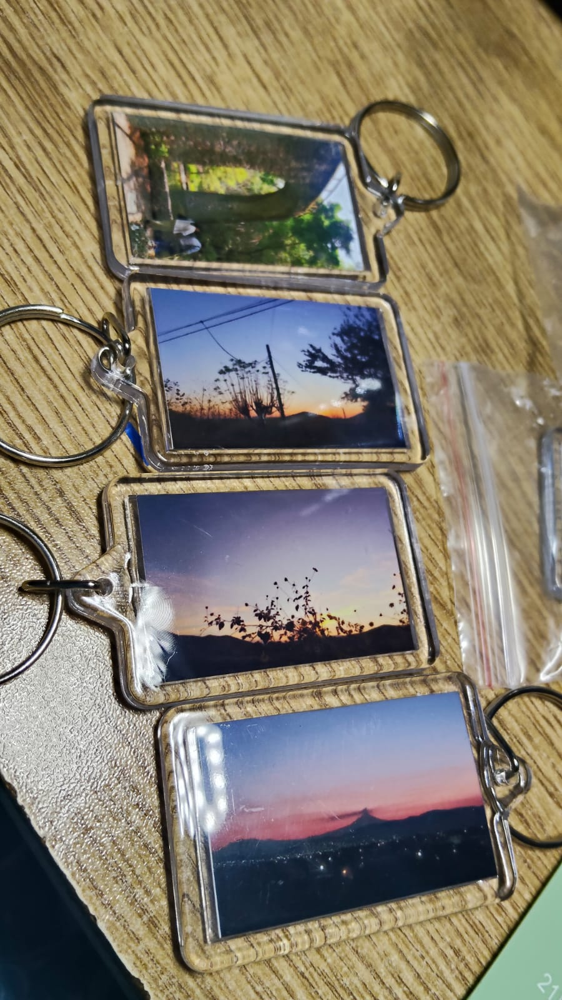
Souvenirs de Paisajes - Xochitepec
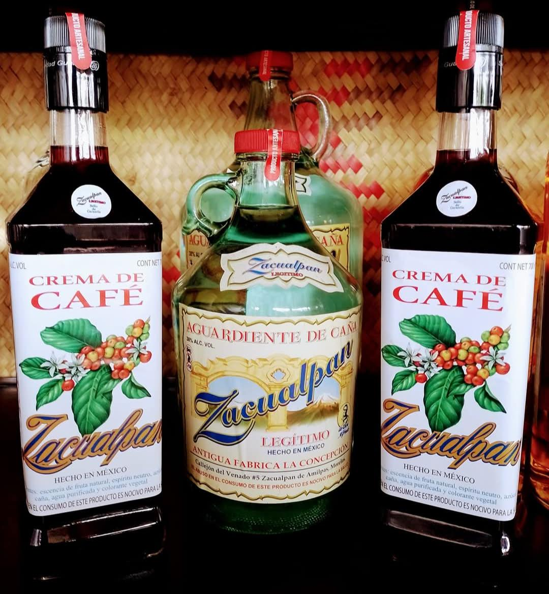
Licor de Caña y Café - Zacualpan de Amilpas
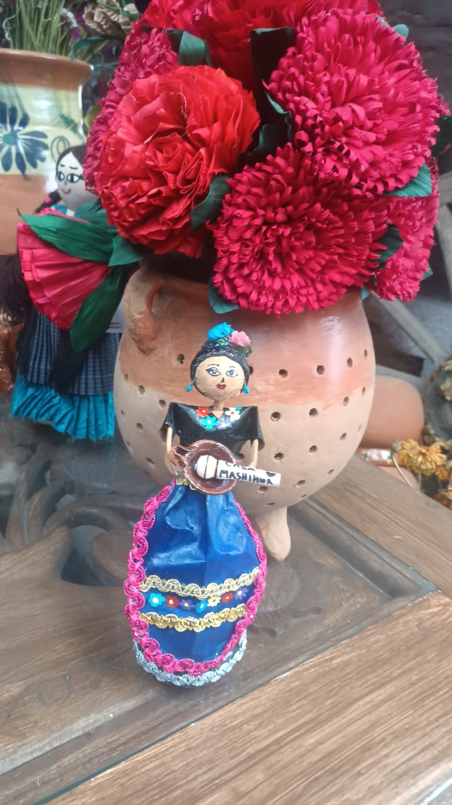
Figuras de Totomuxtle - Cuautla

Músico - Jiutepec